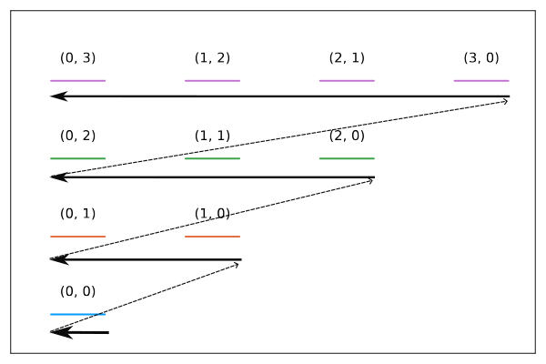

Recently, I had to write an exact diagonalization routine to solve for the ground state of a system of interacting bosons in the continuum. Generally this simply involves choosing a single-particle basis set, \(\{\phi_i(\vec{r})\}|_{i=1}^N\) such that a many-particle basis set may be constructed by enumerating the Fock states, \(\{\ket{n_1, n_2, \dots, n_N}\}\) respecting the bosonic/fermionic symmetry. These states can then be utilized to explicitly construct the Hamiltonian by computing its matrix elements.
We see then that the core subroutine is agnostic to the physical dimensionality of the problem as this information is already abstracted out at the level of the Fock states. In such a case, extending a code developed with 1D systems in mind to higher dimensions is as simple as finding a consistent linear indexing scheme for the single-particle basis set in order to construct the basis of Fock states.
In my particular case, I was working with a 1D system under the influence of a harmonic potential, so the Hermite modes, \(\{h_n(x)\}\) where \(n \in \mathbb{N}\) with single-particle energies \(\epsilon(n) = \hbar \omega (n + 1/2)\), served as a natural single-particle basis. Upon requiring an extension to 2D, a natural choice for the basis can be constructed as a product of the 1D modes, \(\{h_{n_x}(x)h_{n_y}(y)\}\) where \(n_x, n_y \in \mathbb{N}\) with single-particle energies \(\epsilon(n_x, n_y) = \hbar \omega (n_x + n_y + 1)\). We thus require a mapping scheme \(\mathbb{N} \times \mathbb{N} \to \mathbb{N}\) in order to linearly index this basis set.
Constructing the indexing scheme
The modes are labelled by two numbers \((n_x, n_y)\), both of which are non-negative integers. A natural ordering scheme presents itself in the form of increasing energy eigenvalues, however the spectrum is fairly degenerate since \(\epsilon(n_x, n_y) = \hbar \omega (n_x + n_y + 1)\). This degeneracy actually lets us come up with a scheme quite easily.

We can break down the scheme into two pieces; (1) identify the degeneracy level, (2) identify the location within the level. We know that a mode \((n_x, n_y)\) must belong to a level with degeneracy \(n_x + n_y + 1\). This means that the number of elements in the lower energy levels is given by:
\[\begin{equation} \sum_{n = 1}^{n_x + n_y} n = \frac{(n_x + n_y)(n_x + n_y + 1)}{2} \end{equation}\]
Within the level, \(n_y\) itself provides a natural way of ordering the modes. We can thus write a linear indexing scheme like so:
\[\begin{equation} n = \frac{(n_x + n_y)(n_x + n_y + 1)}{2} + n_y \end{equation}\]
Of course, we could equivalently use \(n_x\) instead.
Although it is not readily apparent due to the quadratic nature of this mapping, we expect that it is invertible by construction. In such a case, we have effectively constructed a bijection from the natural numbers to a pair of natural numbers. In fact, what we have here is Cantor’s pairing function, which is the only bijective quadratic function on \(\mathbb{N} \times \mathbb{N} \to \mathbb{N}\). The existence of this function shows that 2-tuples of natural numbers are countable! By extension, we can easily show that the set of rational numbers are countable as well.
While its not too surprising that this result is well-known and has ties to number theory, I found it really nice that it naturally popped up as a practical solution to a seemingly unrelated logistical problem involving the numerical implementation of exact diagonalization.